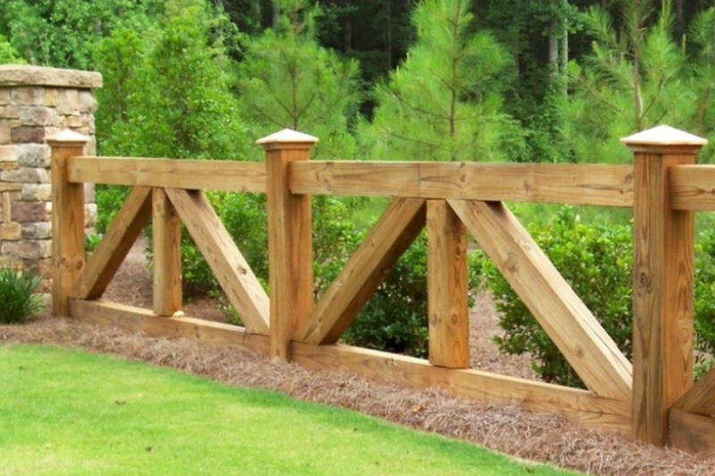

Animal
Horses and cattle do not use the same wire, spacing, or visibility.

This is the right call for a pasture, a field entrance, or a rail line along acreage in Cass County. It is the wrong call for a city backyard. A 6-foot wood privacy fence does not hold cattle, and a two-rail lookalike does not hold a dog.
On agricultural land, North Dakota’s partition-fence law can require adjoining owners to share a boundary fence when the land is used for grazing. A house lot inside Fargo is a different rule. If the line is a shared farm boundary, sort that out before posts go in. Electric fence is an option for some animals and is not the same quote as a physical rail.
We price the line on the lot. These are the pieces that move the number. We do not publish a per-foot menu.
Horses and cattle do not use the same wire, spacing, or visibility.
Farm lines are long. A few hundred feet and a quarter mile are different jobs.
Every change of direction needs a brace, and those take more material than the line posts.
A low field that holds water in April needs deeper or different posts than a drained yard.
Equipment openings are wide and heavy. They move the price more than people expect.
Pulling old wire and bent T-posts is its own pass.
Horses need a fence they can see, often rail, pipe, or a high-visibility tape, because wire they cannot see causes injuries. Cattle are usually held with woven wire or barbed wire on a braced line. Tell us what is in the field. We will not put a horse on a cattle fence just because it is already on the truck.
Yes, as a stand-alone line or as an offset on a physical fence, when it fits the animal. It is not a substitute for a sound corner brace. Chargers, grounding, and winter snow that buries the bottom wire are part of the conversation. An electric line is a different quote from wood rail.
We do not set them in standing water and hope. Spring melt on this clay will jack a shallow post. Low stretches may need a deeper set, a different post, or a line moved a few feet onto firmer ground. We will say so on the walk-through.
On agricultural land, North Dakota partition-fence law can split the duty to build and maintain a boundary fence between adjoining owners. It does not apply the same way to a city house lot. If this is a shared pasture line, get that straight with the neighbor before we start.
Yes. Tell us the width of the equipment, not a guess from the truck. A 4-foot walk gate in a field entrance is a daily problem. The posts for a wide gate are larger, and they are set to stay put when the gate is swung in a wind.
Related: Wood fencing · Gates · Cass County
Call (701) 394-8468 or send the town, the fence type, and roughly how much line you need.